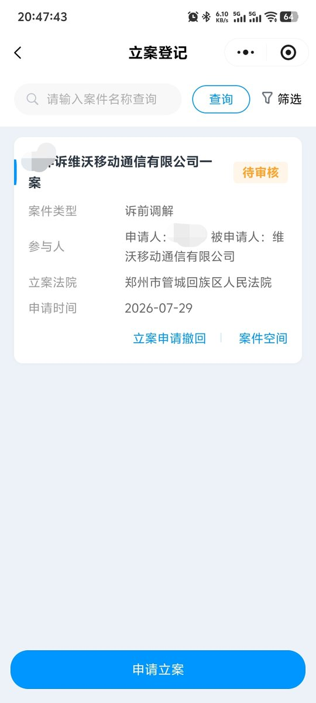

奶昔🥤
@realNyarime
老哥准备按闹分配了，想知道这个方法对vivo施压可行不，会不会在庭前和解
免费换15或者加800换15u，已经截图发给在线客服

奶昔🥤
@realNyarime
网友的Vivo手机虚焊维权第五天，官方限时威胁加价，以下是原文。
本人iQOO12 Pro 用户，手机在延保期内出现主板故障，正常使用，无摔无进水。
因为 iQOO 12 系列主板问题网上存在大量用户反馈，我希望官方能够给予更合理的解决方案，而不是简单更换一块存在争议的主板。 https://t.co/QOf1Kp9f3G